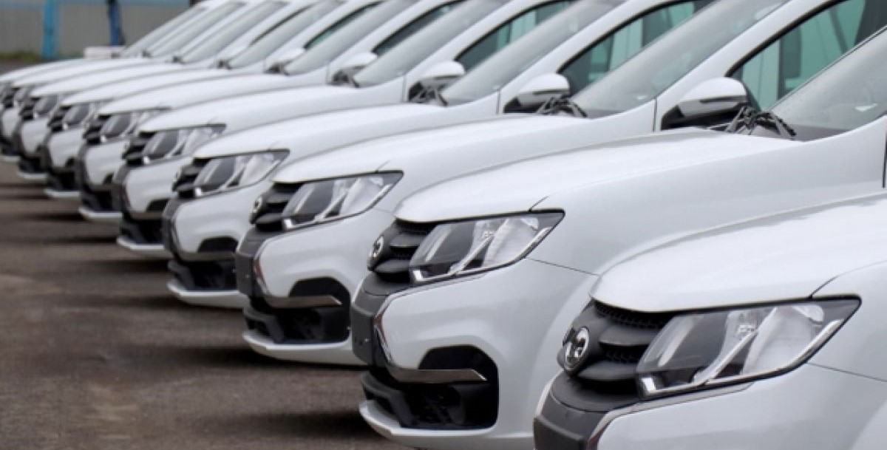

Вітаю вас на сторінці перекупщика!
тут я розповім все про свою фірму та навіть трохи більше
Мене звати Анастасія і я володію найвідомішим автопарком в Україні "AUTO-машіна". Компанія "AUTO-машіна" пропонує вам широкий вибір автомобілів , абсолютно нових (та вживаних звісно також) пригнаних з різних куточків світу.AUTO-машіна - це автомобільний сайт, який добре підійде цінителям простоти і зручності. У нас є хороший вибір машин з різних регіонів України. Тепер не потрібно добиратися до авторинку шляхом різних варіацій транспортрих коштів, адже на авторіа біз ви знайдете абсолютно ті ж машини у продажу, що і на базарі, але ви не зможете не помітити один дуже важливий пункт - зручність.
Тепер розповім трохи про себе
Мені 18 і я навчаюся на другому курсі ННІФТКН-у Чернівецького національного університету ім. Юрія Федьковича за спеціальністю "Комп'ютерні науки". Обожнюю веб-програмування та розробку програмного забезпечення... Також цікавлюся математичними та фізичними науками , обожнюю читати різні наукові статті про квантову фізику та новітні технології і як вони працюють .
На цьому поки все , дякую за ваш перегляд та нище залишаю посилання на офіційний сайт "AUTO-машіна"
...Тут посилання
Якщо на момент обміну аналогічного товару немає у продажу, споживач має право або придбати будь-які інші товари з наявного асортименту з відповідним перерахуванням вартості, або розірвати договір та одержати назад гроші у розмірі вартості повернутого товару, або здійснити обмін товару на аналогічний при першому ж надходженні відповідного товару в продаж. Продавець зобов’язаний у день надходження товару в продаж повідомити про це споживача, який вимагає обміну товару.
Виникли питання або хочете покращити наш сервіс ? Тодізвертайтеся за номером: +380660106666